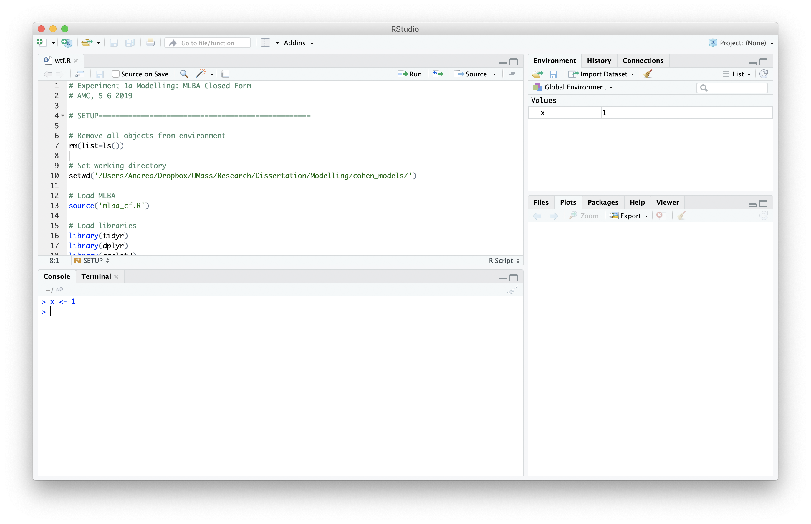
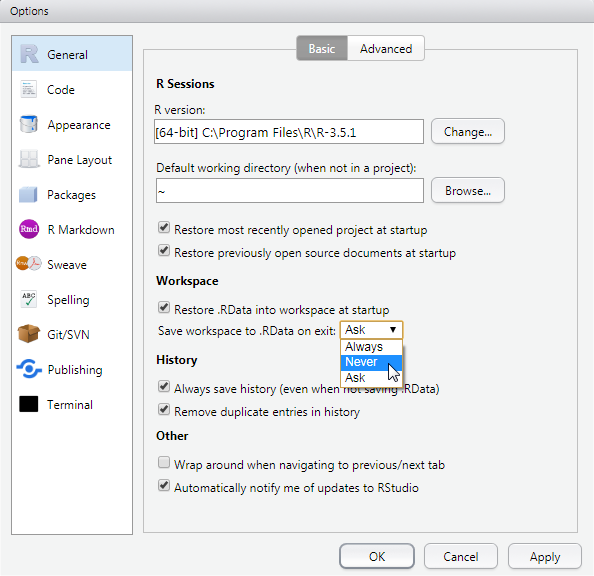

Chapter 1 Introducing R and RStudio

1.1 Pane #1: The R Console
The R console allows you to execute R code (often called expressions, or commands) and see the results printed out. To execute R commands, place your cursor at the prompt (the > symbol), type in your code, and press Enter.
A simple and easy way to demonstrate using R console is to perform some basic arithmetic, just like a calculator. R has 5 basic arithmetic operators:
+for addition-for subtraction*for multiplication/for division^for exponentiation
2 + 2
## [1] 4R respects the order of operations (i.e. PEMDAS) by default, so if you want to for a specific operation to be executed fist, you need to surround it with parenthesis. To see how grouping with parenthesis affects arithmetic operations, compare the following two examples:
2*10 + 3/10
## [1] 20.3
2*(10 + 3)/10
## [1] 2.6The R console is the best place to start immersing yourself in the language by experimentation. It allows you to “code as you go”; run one command, see what you get, adjust it and test it again. However, the interactive nature of using the R console makes it a poor choice for saving your work to use again later, and for complicated, multi-step operations.
When you know you need to repeat the same step again in the future (i.e. re-use code), or you have a task that requires intermediate steps, you should organize all your code into an R script. RStudio allows you to easily write and interactively test out your R scripts in the Editor Pane, which is introduced below.
1.2 Pane #2: The Editor
The editor pane is where you can create, modify, and save plain text documents, and is designed to help you create and execute R scripts. An R script is just a text file that contains valid R code (the same kind of commands you would enter into the console), and commonly carries the .R file extension. You can think of an R script like a stand-alone computer program, but instead of double-clicking to run it, you run it via the R interpreter.
You can create a new, blank R script by going to the File Menu ➡ New File ➡ R Script.
Rstudio provides several methods for executing the code you’ve written. You can:
- Run a single line of code by placing your cursor on that line and pressing Ctrl + Enter (⌘ Command + Enter on Mac).
- Run multiple lines of code by selecting all the lines your want to run with your cursor and pressing Ctrl + Enter (⌘ Command + Enter on Mac).
- Run the entire R script by pressing the “Source” button in the top-right corner of the editor pane, or using the Ctrl + Shift + S keyboard shortcut (⌘ Command + Shift + S on Mac)
No matter which method you use, the code you choose to run will be executed in the R console below, and you will see any results printed out there as well. Keeping your code in an R Script allows you to quickly and easily run many commands in a row, without having to type each one in every time you need to do it.
Another reason to write your code in an R script is to keep a short explanation of what you are doing (and why!) together with your code. These short explanations are called comments In R, you write a comment by prefixing the comment’s text with the pound sign #. Comments can go on their own line, or at the end of an R expression.
A Word Of Advice
When new programmers keen to improve their skills hear the advice “keep your code in an R Script, not the console”, they often take it quite literally. And they take all the over code they have run in the console, copy it to an R script, save it, and run it all again later. Best practices achieved, right?
However, new programmers frequently over apply this rule - they keep literally everything they’ve run, even commands that are syntactically incorrect and give errors or incorrect results. An R Script should not be a historical record - rather it should be evolve through editing and careful consideration, much the same way an essay does.
So, when saving your code in an R Script, try keeping the following rule of thumb: Your R script should have all the commands you need, and none of the ones you don’t. This can be challenging for new programmers - the ability to identify what is necessary and what isn’t develops with time and expertise. So, don’t expect to be perfect at this in the beginning, but do expect to edit and re-edit your R scripts, and don’t treat your “Chapter 2 HW.R” file as your diary of working on your Chapter 2 homework.
# Hi I am a comment.
# The R interprer ignores me!
2*10 + 3/10 # comments can go here too!
## [1] 20.31.3 Pane #3: Your R Session
1.3.1 Variables and the Environment
As your R scripts grow beyond adding and subtracting a few numbers, you will often want to save the results of your computations (like datasets, or the results of statistical models) to use multiple times, or to increase the clarity of your code. In R, you can save a value for later use by assigning it to a variable name.
You can create a new variable using the assignment operator <-, using the syntax name <- value where name is a syntactically valid name, and value is the value you wish to assign. To demonstrate creating a variable, consider the code below, where I create a variable named x, assign it a value of 1, and then print out its value by typing x into the console and pressing enter.
x <- 1
x
## [1] 1If you execute the first command x <- 1 in your own console, you should see it appear in the “Environment” pane of the RStudio window. The environment pane is helpful for keeping track of all the variables you’ve created. If you ever want to clear your Environment (i.e., delete all the variables you’ve created), you can press the button.
Variable names are mostly arbitrary (we could have used elephant or jumpluff instead of x), but there are some restrictions on variable names, the most important being:
- Spaces are not allowed
- The name cannot begin with a number.
See the “Details” section of the make.names help page, and the list of reserved keywords for a complete set of naming rules.
A word of advice
When you exit RStudio, you will get a pop-up asking you if you want to “Save workspace image…” to some location on your hard drive. Any person’s natural inclination is to answer “Yes” - what fool doesn’t want to save their work? However, saving your “workspace image” and “saving your work” are not the same thing.
Saving your workspace means saving the state of your R session (i.e., all the variables, you’ve created, packages you’ve loaded, etc.) so they everything can be reloaded the next time you start RStudio. Which sounds great. Until you get a month into the semester, and you’ve keep saving and loading an entire month of R sessions each time. You’ve run out of variable names and have resorted to naming things “xxxxxx” to avoid naming collisions. Or you forget to avoid naming collisions and obliterate that one variable you actually do care about. And now RStudio takes 2 minutes to start and shut down because you’ve created a behemoth.
In short, saving your workspace sounds great, but encourages very bad practices. It encourages letting RStudio keep track of your past work, instead of writing R scripts, and you end up storing 10 pieces of junk for every one thing you do need.
We STRONGLY advise you to disable this feature, and teach your students to disable it as well. To disable this feature, navigate to Tools Menu Global Options Basic. On this tab, set the “Save workspace to .RData on exit” option to “Never” using the drop down menu, as shown below. Your future self thanks you.
 ### History RStudio also keeps track of the R commands that you’ve run in the past. This is useful during experimentation and testing, because it allows you to quickly copy a previous command, modify it, and try it again. It can also be helpful when you discarded code because you thought it wasn’t useful or necessary, but later realize it was, and need to remind yourself what you did.
The best was to access the history of your most recent commands is place your cursor in the console, and use the up and down arrow keys. Pressing the ⬆ arrow key will take you through older commands, and press the ⬇ arrow key will take you back to more recent commands. So, next time you need to edit the command you just gave, use the arrow keys to retrieve it instead of typing it out again!
To access commands more than say, 10, commands in the past, you can use the “History” tab in the top-right pane of the RStudio window. This allows you to examine your history like scrolling through a file, or find commands matching key words, like using a search engine. Remember, the best way to remember what you’ve done is to record it in an R Script to use again later, but the “History” tab provides a useful backstop for those moments when you “slip up”.
1.4 Pane #4: Miscellaneous
Don’t let the name of this section mislead you - this pane is just as important and useful as the others. IT provides a window into three of the most important things you need when using R: plots, packages, and help!
1.4.1 Plots
This tab might be the killer feature of R Studio. As you might imagine, this is where figures and plots you create are displayed. R has many simple yet powerful visualization tools, but historically, actually getting those plots to show up somewhere has involved annoying, platform-specific boilerplate code. With the R Studio plot tab, you can forget about these details 95% of the time, and your plots just show up automatically.
1.4.2 Packages
The so-called “base” installation of R you downloaded from cran.r-project.org has tons of useful tools for statistical modeling, data manipulation, and visualization built in, but it is far from exhaustive, and new things are being invented all the time! Thankfully, R has a fantastic extension mechanism called “packages”. R packages provide sets of additional commands you can easily install, load into R, and then use for yourself.
Where can you find these packages, and how can you install them yourself? The gold-standard for R packages is the CRAN repository, which stands for the Comprehensive R Archive Network. You can install packages from this repository using the install.packages() command. For example, if I wanted to install the dplyr package (a popular packages which provides opinionated tools for data manipulation), I would execute the following command in the console:
install.packages("dplyr")If this package has any dependencies (i.e., other packages it needs installed in order to function), R will download and install these dependencies automatically. Once the one-time,e installation process finishes, you can load it into your R session with the library command, like so:
library("dplyr")Remember, installing a package is a one-time operation, but you do need to load the package with library each time you start R.
The “Packages” pane provide a way to see what packages you have installed, and which ones are loaded (loaded packages have a check-mark in front of them). You can also use this pane to install new packages (instead of using the install.packages command, bulk-update all your installed packages, and remove an installed package you no longer want to keep.
1.4.3 Help
The help pane provides a way for you to access documentation explaining how to use different R functions. You can search all the help pages from the search bar on the “Help” pane. If you know the name of the function you want to view help on, you can type in the console preceded by a question mark, and hit Enter. For example, if I wanted to see more information on how to use the install.packages function, I could type:
?install.packagespress Enter, and the help page would automatically open.
1.5 Conclusion
Here, we have given an introduction to some of the R language’s basic functionality (the interactive console, arithmetic, variables, plots and packages) by using the layout of the RStudio IDE as a guide. In the next sections, we demonstrate the basic tenants of the R language and basic R programming tasks, such as calling functions, creating and manipulating data structures, and importing data from files on your hard drive into R.
Reproducibility
The R session information when compiling this book is shown below:
sessionInfo()
## R version 3.5.1 (2018-07-02)
## Platform: x86_64-w64-mingw32/x64 (64-bit)
## Running under: Windows 7 x64 (build 7601) Service Pack 1
##
## Matrix products: default
##
## locale:
## [1] LC_COLLATE=English_United States.1252
## [2] LC_CTYPE=English_United States.1252
## [3] LC_MONETARY=English_United States.1252
## [4] LC_NUMERIC=C
## [5] LC_TIME=English_United States.1252
##
## attached base packages:
## [1] stats graphics grDevices utils datasets methods base
##
## other attached packages:
## [1] printr_0.1
##
## loaded via a namespace (and not attached):
## [1] compiler_3.5.1 magrittr_1.5 bookdown_0.11 htmltools_0.3.6
## [5] tools_3.5.1 Rcpp_1.0.1 stringi_1.4.3 rmarkdown_1.13
## [9] knitr_1.22 stringr_1.3.1 xfun_0.6 digest_0.6.19
## [13] packrat_0.4.9-3 evaluate_0.14